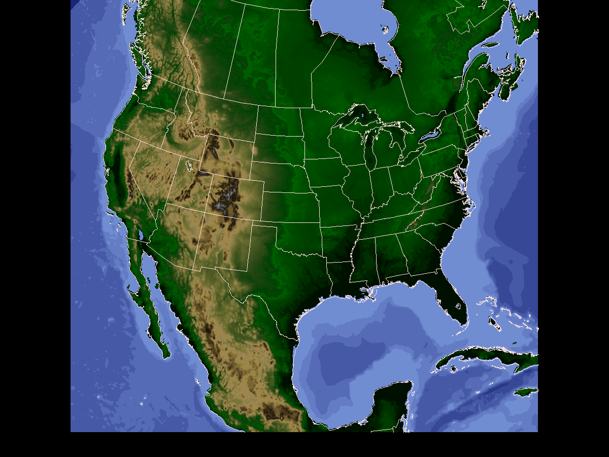

This example utilizes DEM topography data 5 minute topography data to create a topographic image that may be used as a basemap.
For this exercise you will need to download the DEM global 5 minute topography file world_topo.5min to your working directory.
Create a topographic grid for desired area using GDTOPO
GDFILE = nam_basemap.gem
GAREA = 10;-140;65;-40
GDATTIM = 070101/0000
GVCORD = none
GFUNC = topo
TOPOFL = world_topo.5min
IJSKIP = 0
GEMPAK-GDTOPO>r
Create an image from topography/bathymetry data using GD2IMG
Use a 2 part calibration range for band 3.
Use pixel values 0 to 7 for negative values (-8103 to 0 meters), and pixel values 8 to 95 to represent positive values (0 to 4700 meters).
The region selected represents a 6 km resolution product.
GDATTIM = last
GDFILE = nam_basemap.gem
GLEVEL = 0
GVCORD = none
GFUNC = topo
SCALE = 0
PROJ = str/90;-97;0
GRDAREA = 15;-116;50;-51.95
KXKY = 1002;925
CPYFIL =
SATFIL = nam_basemap.gini
CALINFO = 99/3/TOPO,0,7,-8103,0;8,95,0,4700
WMOHDR = TICZ99/UPC/
GEMPAK-GD2IMG>r
Display the composite image in GEMPAK programs as a satellite image and overlay data as desired.
MAP = 1
GAREA = dset
PROJ = sat
SATFIL = nam_basemap.gini
LUTFIL = upc_dem5.tbl
GEMPAK-GPMAP>r
